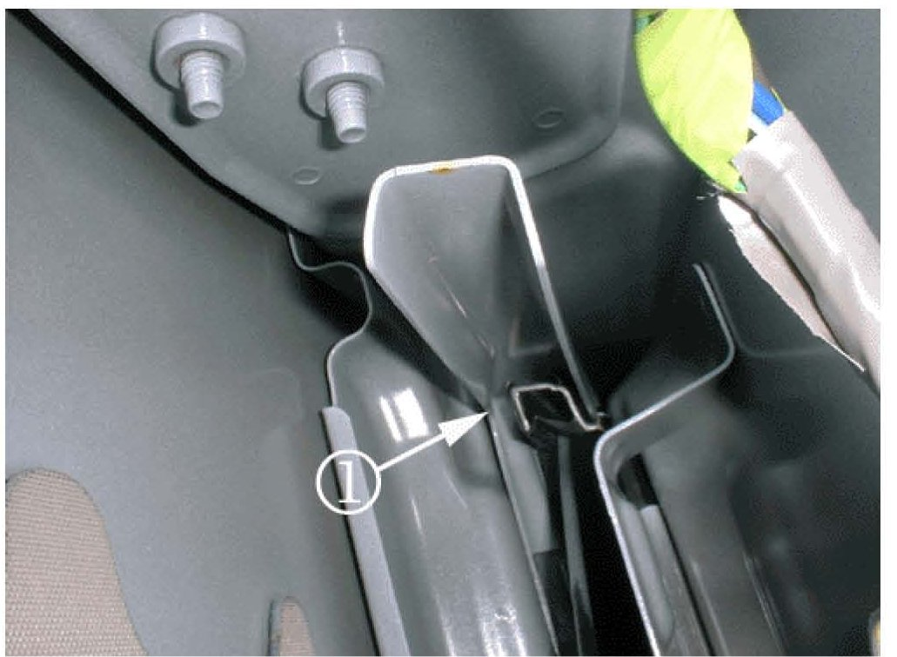
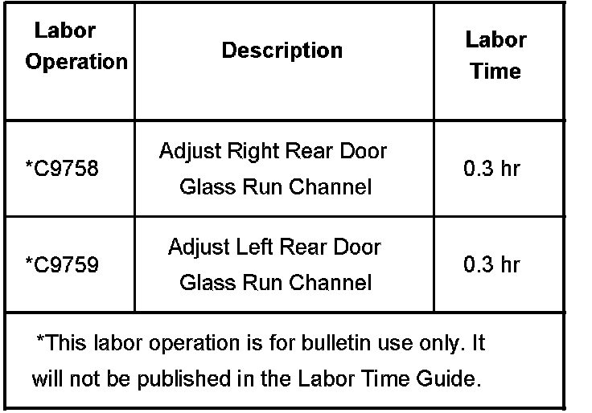

Body - Rear Door Buzzing/Binging Noises
Bulletin No.: 06-08-64-021Date: May 16, 2006
TECHNICAL
Subject:
Buzz/Binging Noise In Rear Doors When Closed (Adjust Door Glass Run Channel)
Models:
2007 Cadillac Escalade ESV, Escalade EXT
2007 Chevrolet Avalanche, Suburban
2007 GMC Yukon XL, Yukon Denali XL
Condition
Some customers may comment on a buzz/binging type noise in the rear door when the door is closed or when the front door is closed.
Cause
This condition may be caused by the door glass run channel contacting the belt reinforcement in the rear door.
Correction

Remove the door trim panel. Refer To Rear Side Door Trim Panel Replacement in SI. With the glass in the closed position, reposition the front run channel by twisting the channel counterclockwise on the right door or clockwise on the left door. The Illustration above shows where the channel is making contact with the belt reinforcement.
Warranty Information

For vehicles repaired under warranty, use the table.

Disclaimer